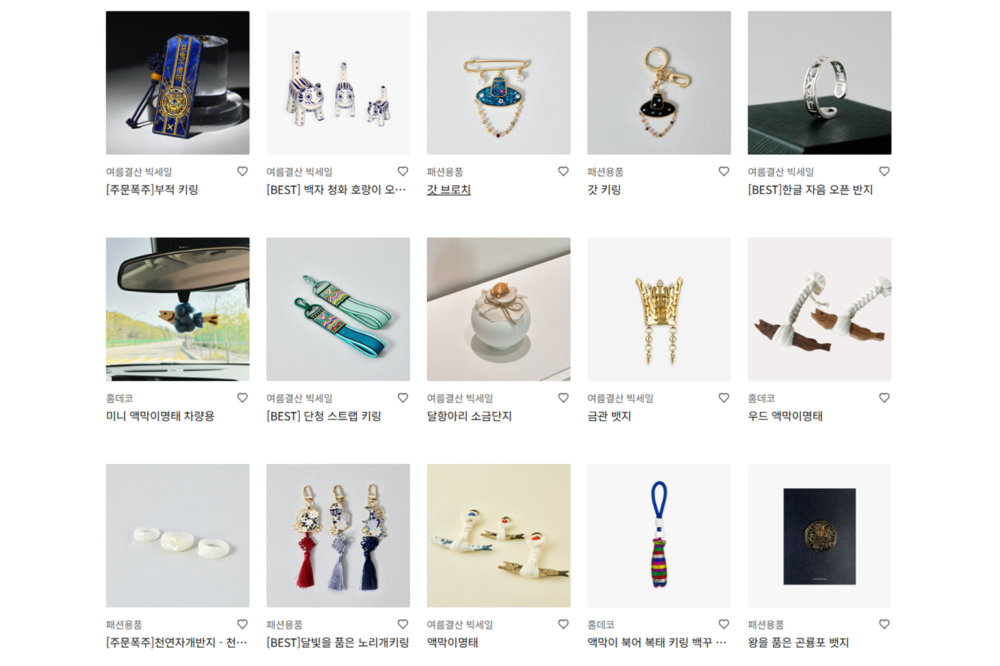

한국전통 악세서리
노리개·비녀·한복 소품 등 한국 전통 액세서리 기념품.
한국전통 악세서리는 노리개, 비녀, 한복 브로치·키링, 전통 문양 귀걸이·팔찌처럼 가져가기 쉬운 문화 기념품입니다. 인사동·통인시장·민속촌·백화점 전통 코너에서 고를 수 있습니다.
한국민속촌 공식 스토어에서도 전통 소품·기념품을 둘러볼 수 있습니다. 금속·천 소재와 마감을 손으로 확인하세요.
한국전통 악세서리는 노리개, 비녀, 한복 브로치·키링, 전통 문양 귀걸이·팔찌처럼 가져가기 쉬운 문화 기념품입니다. 인사동·통인시장·민속촌·백화점 전통 코너에서 고를 수 있습니다.
한국민속촌 공식 스토어에서도 전통 소품·기념품을 둘러볼 수 있습니다. 금속·천 소재와 마감을 손으로 확인하고, 선물 포장 가능 여부를 물어보세요.
사는 팁
구매 팁 한국민속촌 스토어: https://www.koreanfolk.co.kr/store — 방문 전 영업·배송 안내를 확인하세요.